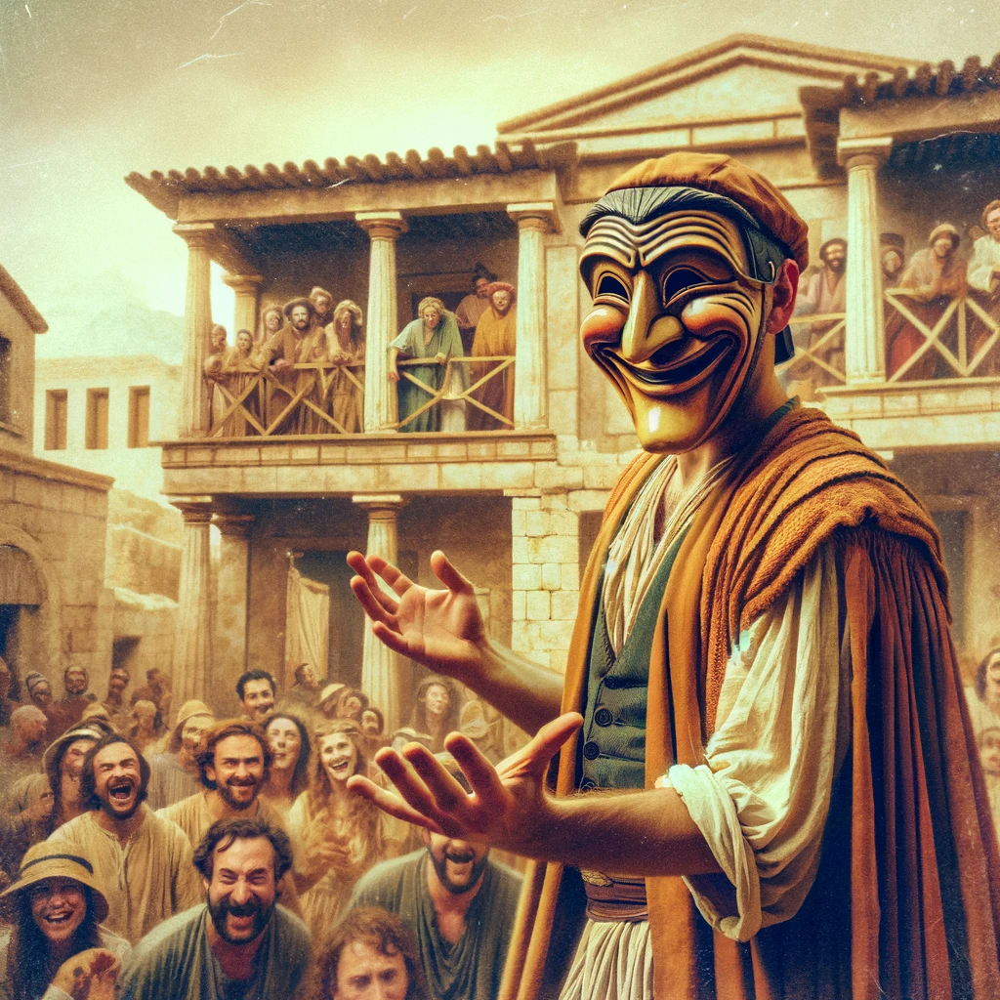

Description
The Tricksters are a class of devious beings inspired by the Greek god of deceit and trickery, Dolos. They are masters of deception and misdirection and use their cunning wits and guile to outwit their enemies.
Hit Points:
- Hit Die: 1d8 per Trickster Level
- Hit Points at 1st Level: 8 + Constitution Modifier
- Hit Points at Higher Levels: 1d8 + Constitution Modifier per Trickster Level after 1st
Proficiencies:
- Armor: Light Armor
- Weapons: Simple Weapons, Shortswords
- Tools: Thieves’ tools
- Saving Throws: Dexterity, Intelligence
- Skills: Choose four: Acrobatics, Athletics, Deception, Insight, Intimidation, Investigation, Perception, Performance, Persuasion, Sleight of Hand, and Stealth
Starting Equipment:
Lvl 1: Mischievous Apprentice
- Mischievous Glamour (Action): You can disguise yourself and your allies with a magical glamour, granting you an advantage on all Charisma (Deception) checks. When disguised, players are unable to use actions or bonus actions. Can only disguise as creatures or items that are known to the user and when transforming, the user must succeed on a History roll (rolled with advantage), on fail, the players affected have a disadvantage on Deception checks and become more suspicious to NPCs or enemies. Last 1 hour. Can be used once per long rest.
Lvl 2: Sly Strategist
- Trickster's Cunning (Improvisation): You gain advantage in Deception and Stealth skills.
- Tricks of the Trade (Improvisation): You gain advantage in the Sleight of Hand and Performance skills.
Lvl 3: Devious Delinquent
- Trickster's Guile (Action): You can cast the Charm Person spell, but instead of targeting one creature, you can target up to three creatures. Affected creatures must make a DC 13 Wisdom saving throw, on fail, the creature(s) regards you as friendly and the spell ends when anything harmful is done to it. Range 30ft. Can be used once per short rest.
Lvl 4: Irresistible Imp
- Invoke Dolos (Bonus Action): You can call upon the power of Dolos to grant you a magical bonus. You can choose one of the following benefits: advantage on all attack rolls for one round, advantage on all Charisma (Deception) checks for one round, or immunity to being charmed for one round. Can be used 3 times per short rest.
Lvl 5: Unpredictable Prankster
- Trickster's Escape (Action): You can cast the Misty Step spell, allowing you to instantly teleport up to 30 feet away. Can be used 5 times per short rest.
- Trickster's Blessing (Bonus Action): You can grant a creature a blessing from Dolos, granting them advantage on all Charisma (Persuasion) checks for one round. Cantrip.
Lvl 6: Stealthy Saboteur
- Invoke Dolos' Wrath (Bonus Action): You can call upon the power of Dolos to unleash his wrath upon your enemies, dealing 5d8 necrotic damage to all creatures within 30 feet. Cantrip.
Lvl 7: Elusive Imposter
- Trickster's Veil (Bonus Action): You can cast the Invisibility spell, making you and up to three other creatures invisible for up to one hour. Invisibility breaks when an action is used. Can be used 3 times per short rest.
- Trickster's Senses (Passive): You gain the ability to see through illusions and detect invisible creatures. Range 100ft.
Lvl 8: Grand Illusionist
- Trickster's Trap (Action): You can cast the Wall of Force spell, creating an immovable wall that cannot be moved or destroyed. Wall is 25 ft wide. Does not affect flying creatures. The Wall is one-way, being able to be shot through with ranged weapons on the side of the user that cast it for half that weapons damage, rounded up. Can be used once per long rest.
Lvl 9: Master Manipulator
- Dolos' Favor (Bonus Action): You can call upon the power of Dolos to grant you favored status in the eyes of the gods, granting you a +6 bonus to all saving throws. Cantrip.
- Trickster's Boon (Action): You can cast the Polymorph spell, allowing you to transform up to three creatures into a harmless animal of your choice. Creatures affected gain stat blocks of the chosen animal and must succeed a DC 12 Dexterity saving throw. Range 30ft. Can be used once per long rest.
Lvl 10: God of Illusion
- Trickster's Disguise (Action): You can cast the Disguise Self spell, allowing you to take on the appearance and stats of another creature in sight. Last 15 turns. After the spell dissipates, all user stats become halved until the end of the next long rest. Can be used once per long rest.